For customers
Customers can choose a business location, use a public booking page, receive a short appointment code, and track booking status without creating an account.
Portfolio Case Study
A branch-aware appointment and queue SaaS case study built with vanilla JavaScript and Supabase. The goal was to prove a small service business can manage public booking, short appointment codes, staff/services/settings, daily queue status, branch isolation, and mobile-safe front-desk workflows from one practical dashboard.

Main dashboard view with branch selector, operating stats, and module navigation.
Project Overview
QueuePoint is designed for businesses that currently manage appointments through notebooks, Messenger chats, phone calls, spreadsheets, and informal PM-based workflows. The case study focuses on the technical work needed to separate public booking from authenticated operations while keeping every branch’s data isolated.
Customers can choose a business location, use a public booking page, receive a short appointment code, and track booking status without creating an account.
Staff can view today's appointments, move customers through booked, waiting, serving, and closed states, and keep queue flow visible from a mobile-tested dashboard.
Owners can manage branches, services, staff, settings, and business data through an authenticated dashboard protected by Supabase RLS and branch-aware filtering.
Technical Architecture
The homepage presents QueuePoint as a business system. This case study carries the heavier details: branch context, RLS boundaries, public/private data access, edit locks, short codes, and mobile behavior.
The Problem
Many small businesses need appointment and queue control, but not a large scheduling suite. The system needs to be simple enough for front-desk use while still protecting business data.
The Solution
QueuePoint combines public booking with an authenticated business dashboard. The selected branch controls the services, staff, appointments, queue, and settings shown to the user, while public pages stay simple for customers.
Core Features
The current MVP is more than a booking form. It includes authenticated branch operations, public booking, queue flow, and reusable module patterns for services, staff, and settings.
Backend & Security
QueuePoint uses Supabase Auth, PostgreSQL tables, Row Level Security, and RPC functions to keep public booking and authenticated dashboard workflows separated while preserving branch-specific operating context.
businessesbusiness_usersservicesstaff_membersbusiness_settingscustomersappointmentsNo business should see another business's customers, appointments, services, staff, settings, or queue entries. Dashboard modules filter by the selected branch and RLS enforces ownership at the database layer.
Public booking can read safe business/location data and active services, while authenticated users manage private operational data through owner/admin policies.
Rule: one business or branch should never see another business's customers, appointments, services, staff, settings, or queue entries. RLS and branch-aware queries both enforce the operating context.
Rule: customers can create appointments without logging in, but public inserts are routed through a controlled backend workflow instead of exposing broad table access.
Rule: each active business or branch consumes an allowed slot. The backend checks ownership and plan limits before allowing new branch creation.
Rule: customer-facing codes must be readable enough to write down, while still remaining unique within the business/date context.
Engineering Notes
QueuePoint is strongest where the UI depends on backend rules: branch context, public/private access, owner limits, status transitions, and safe editing behavior.
Dashboard modules do not behave as isolated pages. Services, staff, settings, appointments, queue entries, and business details reload from the currently selected branch.
Appointments move through real front-desk states: booked, confirmed, waiting, serving, completed, cancelled, and no-show. Queue views are grouped from these operating states.
Booking drafts and dashboard edit forms are protected against branch changes, navigation, logout, and Back-button exits when a user has already entered data.
Customers can track appointments using business and appointment codes. The system keeps customer lookup simple while preserving private dashboard access for staff and owners.
Key Challenges Solved
The strongest parts of the project came from the problems that appeared while turning a simple booking app into a multi-branch SaaS-style dashboard.
Services, staff, appointments, queue, business details, and settings had to reload cleanly when the selected branch changed. This forced the dashboard to use the active branch as the operating context.
Users could originally switch branches, navigate away, log out, or press Android Back while editing forms. QueuePoint now blocks branch switching, sidebar navigation, logout, and Back while a module is in add/edit mode.
An apparent RLS error was traced back to a missing authenticated session. The fix clarified the difference between a recognized user and a usable Supabase session/JWT for authenticated database requests.
Long codes were not practical for customers. QueuePoint now uses shorter per-branch/per-day appointment codes that are easier to write down and use on the tracking page.
Branches without settings use defaults until saved. Saving either updates the existing row or inserts a new branch-specific row.
The public booking page now lets customers choose the business location while still using branch codes internally. Draft locks block location changes, top navigation, and Back while customer booking details are already entered.
Real-phone testing showed that normal responsive layout was not enough in landscape. QueuePoint now uses a focused-field dock for text inputs so the active field remains readable when the Android keyboard consumes most of the screen.
Screenshots
These screenshots show the stable MVP flow: customers choose a location, book an appointment, receive a short code, track status, and staff manage daily operations through a branch-aware dashboard.
Dashboard overview. The authenticated dashboard centers branch selection, operating stats, and the main modules: services, staff, appointments, queue, business, and settings.
QueuePoint keeps the public side simple: choose a location, enter booking details, receive a short code, and track the appointment without creating an account.
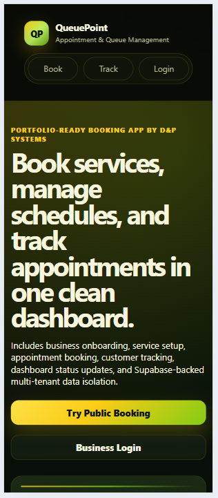
Customer-facing entry point with clear paths for booking, tracking, and business login.
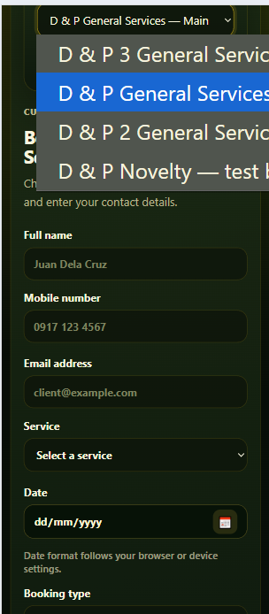
The public booking page lets customers choose the business location before selecting service, date, and time.
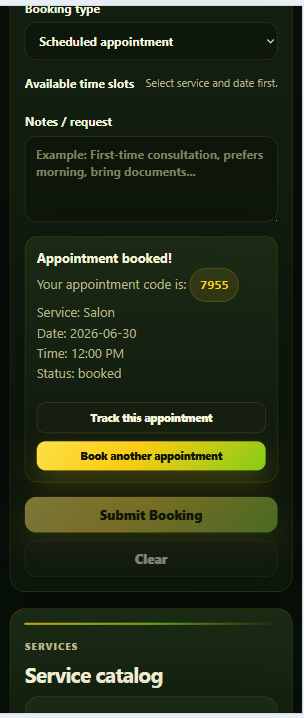
After booking, the customer receives a readable appointment code with actions to track the booking or start another one.
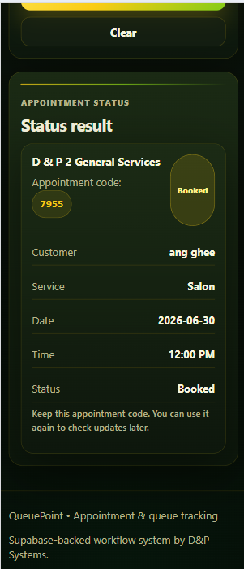
Customers can look up their appointment status using the business code and short appointment code.
The authenticated side is branch-aware: services, staff, settings, appointments, and queue data reload based on the selected branch.
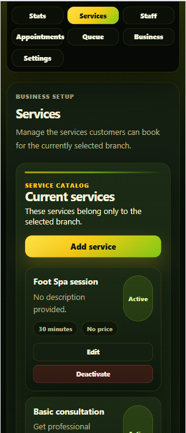
Branch-specific service catalog with duration, price, and active/inactive service controls.
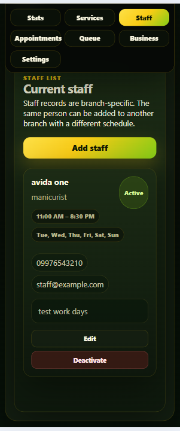
Staff cards show branch-specific staff, role, schedule, and active/inactive state without deleting historical context.
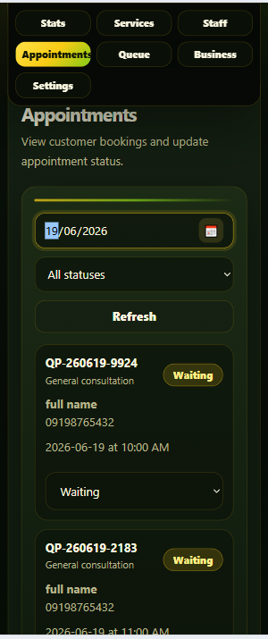
Daily appointment view with date/status filters and status updates for front-desk workflow.
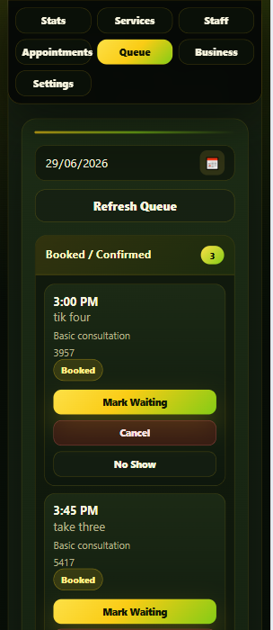
Queue workflow groups appointments into booked, waiting, serving, and closed operational states.
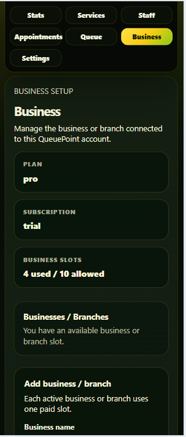
Business status strip shows plan, subscription, and branch slot usage while keeping branch data separate.
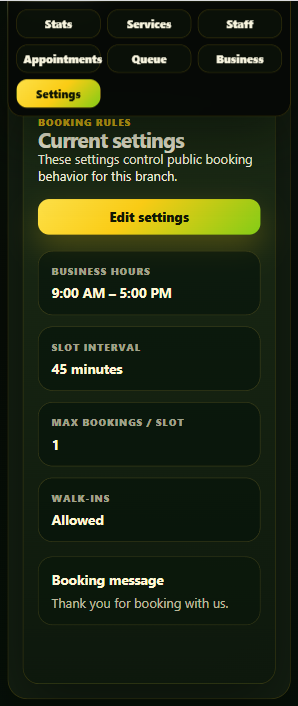
Branch-specific settings control booking hours, slot length, booking capacity, walk-ins, and customer messages.
QueuePoint was tested beyond desktop resizing. Mobile fixes included sticky dashboard navigation, Android Back protection, booking draft protection, and a landscape keyboard dock for short screens.
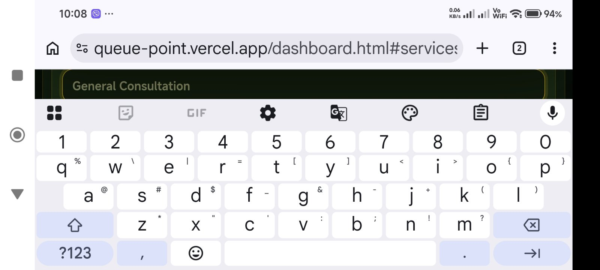
Landscape keyboard dock. Real-phone testing exposed keyboard pressure in landscape mode. The focused-field dock keeps text inputs readable when the Android keyboard takes most of the screen.
Current MVP Status
QueuePoint is a portfolio-grade SaaS MVP and guided-pilot demo. The current version proves the operational model; the next step would be production hardening around self-service onboarding, payments/deposits, reminders, staff logins, and owner subscription controls.
QueuePoint demonstrates SaaS-style branch isolation, Supabase RLS, public booking, authenticated operations, mobile-safe form handling, and practical dashboard UX using vanilla JavaScript and Supabase.